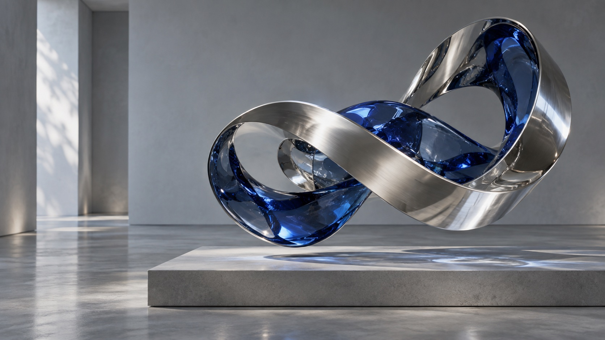

Trefoil
CopperA single tube follows a knot and returns to where it began.
Three sculptures, made from mathematics.
Turn them. Change the material. Find your angle.
The interactive sculpture needs WebGL.
Try a browser with hardware acceleration enabled.
Drag to turn. Arrow keys work, too.
One knot. One ring. One folded surface.
A single tube follows a knot and returns to where it began.
A ring with an uneven radius, lifted into a slow wave.
A sphere, rippled into eight soft lobes. Light reveals the folds.
Pull the curve. Try a new material. Keep a print of the sculpture you make.
Bloom studyBloom / Chrome
The live studio needs WebGL.
Try a browser with hardware acceleration enabled.
Drag the object to turn it. Pull the side handle to twist it. Arrow keys and the sliders work, too.
Your print is a PNG. No sign-up needed.
Chrome folds around cobalt glass.
A still image, beyond the live collection.

Equations become objects.
Each sculpture starts with a mathematical surface. A radius changes. A path closes. A sphere develops folds. Material and light give the same surface a different character.
FORM is a fictional studio and an interactive exhibition. The sculptures are drawn live in your browser; the cobalt still life is a separate image study.